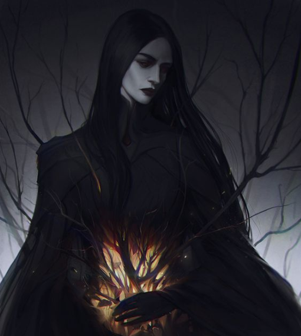

Unlike standard entities birthed through natural leylines, Kiana is a spontaneous manifestation. Lore suggests she was born from the "leftover data" of the first world cycle—the fundamental errors that the High Gods failed to scrub from reality.
She was first recorded in the Dead Sectors, regions of the Mere where geometry collapses and time lacks a linear flow. For Kiana, "survival" wasn't about food or shelter, but about maintaining a consistent physical form against the constant deletion protocols of the Mundus.
The Hollow Eye is not a biological trait but a spiritual sensory malfunction. Because Kiana is part of the system's "trash data," her vision perceives the world's source code.
During her time at the Academy, this dōjutsu activated fully, revealing the "dark mana" shrouding the anchors of reality. This sight allows her to predict system crashes and manipulate raw mana before it takes physical form. Magic can be cast without needing anything physical, a direct defiance of standard magical laws.
Kiana's lore turned from observation to action when she encountered a fragmented soul being hunted by system remnants. This event catalyzed her alliance with other "discarded ones." This group eventually formed the first organized resistance against the High Gods' absolute control.
Perhaps her most famous lore entry is the redirection of the Thunder Rail. Perceiving a massive corruption in the leylines, Kiana diverted a carriage intended for a divine monument. While this led to her suspension, it proved that an Anomaly could successfully interfere with divine destiny.
Kiana's attire is a practical response to unstable physics. Her dark clothing is reinforced against void-erosion, while the pink accents are actually "leaks" of her internal mana signature. The visual distortion—the static ripples—around her frame is a constant reminder that the world struggles to render her existence correctly.